15-418 Final Project Spring 2016
Clayton Ritcher and Nora Shoemaker
We created a parallelized implementation of fractal image compression. Because of the relatively fast speed of decoding, we focused on a CUDA-based encoding implementation only.
Background
Fractal Image Compression had its heyday in the early 90s (even being chosen as the image compression algorithm for all images in Microsoft’s Encarta Encyclopedia [link]) but it was never able to eclipse JPEG. Its main disadvantage compared to JPEG compression is high computation time for compression, which is what we would like to address for this project.
The key insight behind fractal image compression is that self similarity exists in many images, and that this self similarity can be exploited to compress an image. Specifically, fractal image compression looks to find affine transformations from chunks of an image, called domain blocks, to every smaller chunk of the image, called range blocks (which partition the image).These transformations form an iterated function system (IFS) on the image, and if the transformations are chosen correctly, this IFS will converge to the original image for any input. The compressed image, then, is just a file representing the IFS.
The Collage Theorem describes how we can find the appropriate affine transformations to make up our IFS. In layman’s terms, this theorem says that the best way to find the desired affine transformation for a range block is to find the transformation-domain block pair whose result is most similar to the range block. Finding this mapping for every range block defines the IFS, and thus the compressed image.
Decoding the image, which we will not be focusing on for this project, simply involves iterating the IFS on any input image until it converges. The image it converges to will be the original image before compression (with some loss).

We believe the image encoding can be heavily parallelized. The first step of the encoding is to create a codebook, or set of transformed domain blocks. This can be as simple as partitioning the image into squares, and computing each of the 8 affine transformations possible for that square (rotations of 0, 90, 180, and 270 degrees on the normal and mirrored versions of the block). All of these transformations can be computed in parallel.
Next, the best element of the codebook must be computed for each range block. This involves comparing each range block to each domain block using some distance metric, and choosing the codebook element that minimizes this distance (Collage Theorem). This, again can be parallelized -- at least across range blocks, and possibly across range block-codebook element pairs (to compute distances) with a final min function on the distances for each range block.
A further improvement to the project could involve adding support for color images, which naively could be looked at as compressing each channel as a greyscale image (which could be done in parallel, as well). Additionally, we could investigate methods for pruning the codebook, so as to decrease the number of possible transformations to be considered for each range block. This could also present an opportunity for parallelization.
Approach
We created a C++ sequential implementation of fractal compression and decompression, and a CUDA fractal compression implementation in C, targeting the TitanX GPUs running on latedays.
When talking about our approach, we will mainly focus on our parallel compression implementation.
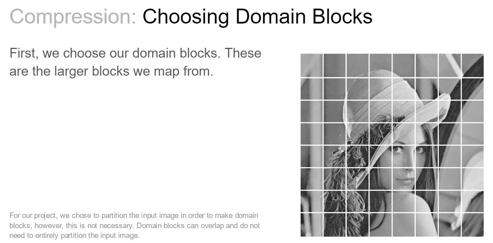 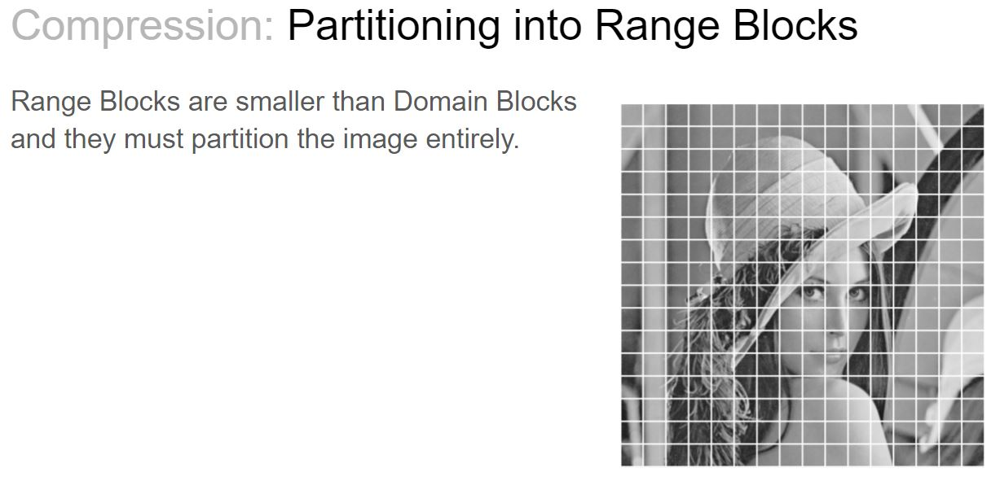
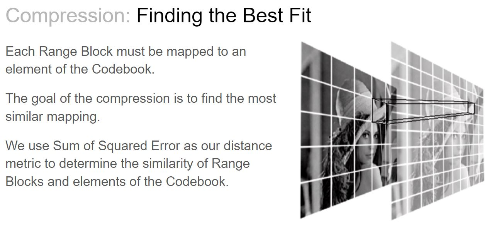
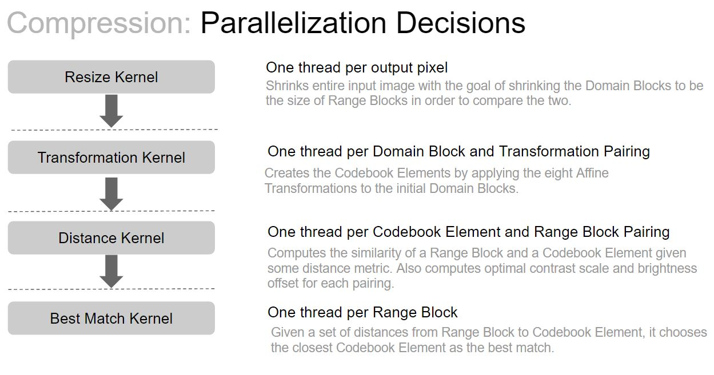
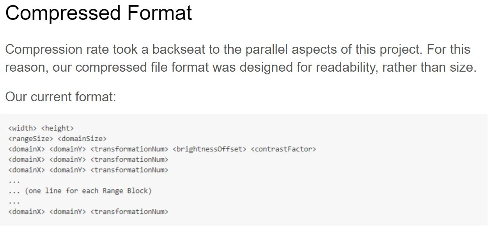
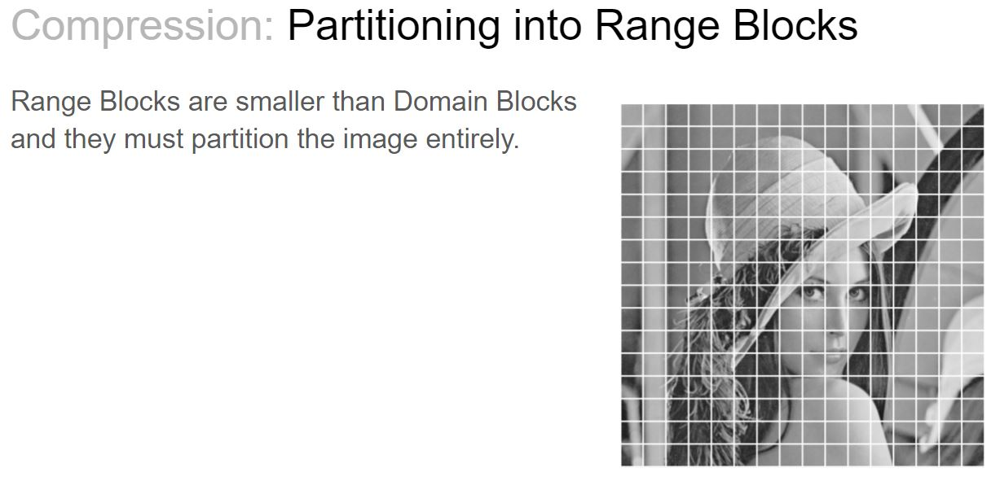
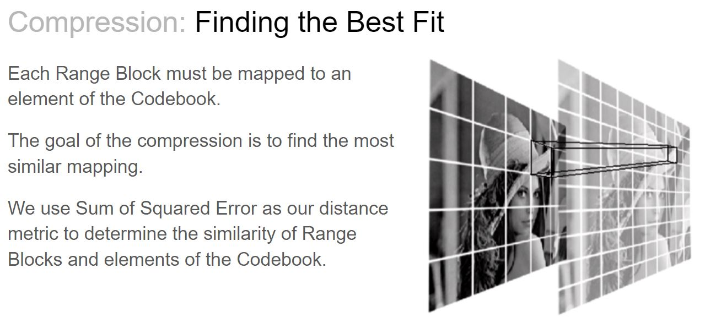
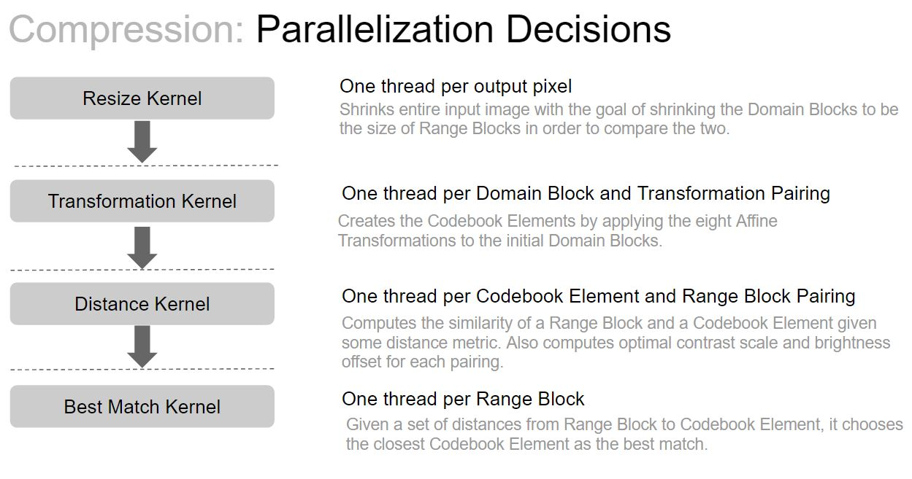
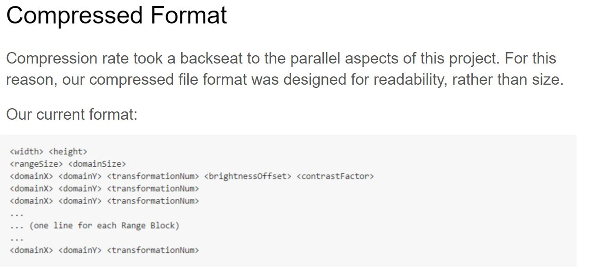
We broke down the image compression into a sequential set of steps and parallelized over each of these steps, synchronizing in between. We didn't exactly change the algorithm from that used in the sequential implementation, but we did change the data and control flow of the algorithm a bit. For instance, we determine the distances between all Range Block and Codebook Element parings, then go back and see which pairing was the best match for any given Range Block. In a sequential implementation, this could be done in one step, rather than two.
Results
We measured performance by speedup as compared to sequential execution (derived from cycle counts). Our baseline is a single-threaded, un-optimized CPU implementation. For our analysis, our inputs are the original image, the domain block size, and the range block size. Our output is a compressed image in our self-defined format. The size of the input image, combined with the size of the domain and range blocks, have a huge affect on the number of threads spawned at any given time.
An interesting thing to note about our approach is that, when broken down into individual sections, our computation is almost entirely due to two kernels. The earlier kernels can really just be thought of as setup for our Distance and Best Match kernels, where almost the entire speedup is derived from. This is good because these kernels are also the most parallelized section of our code. The Distance Kernel spawns NUM_CODEBOOK_ELEMENTS * NUM_RANGE_BLOCKS threads which is equivalent to 8 * NUM_DOMAIN_BLOCKS * NUM_RANGE_BLOCKS threads. The Best Match Kernel spawns NUM_RANGE_BLOCKS threads.
As you can see, some of the preliminary steps are actually hurt by the parallelization. However, they have very little effect on the total speedup. We combined the Distance and Best Match kernels when considering speedup because the sequential implementation performs both in the same pass through the data -- making it impossible to separate.
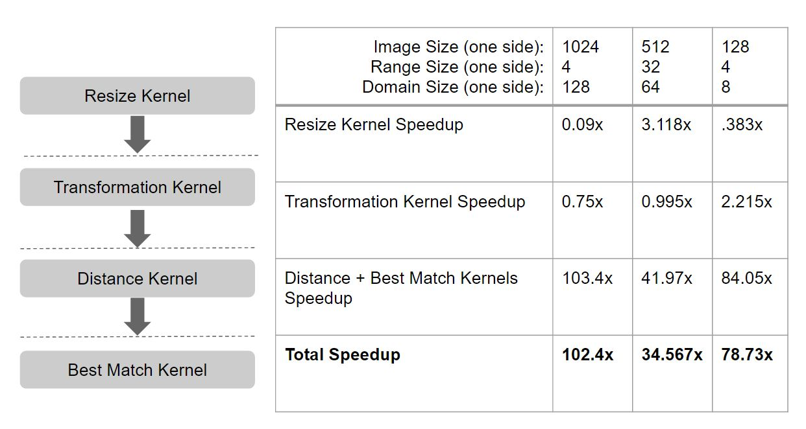Our initial measurement compares the speedup for diffent input image sizes with different domain and range size pairings.

From this graph, we can see that our maximum speedup occurs when we have many range blocks and relatively fewer domain blocks. This makes sense, given that the distance caluclation and matching kernels dominate the runtime of our code. Our distance calculation kernel parallelizes over both range and domain blocks, while our best match kernel parallelizes over range blocks, with work proportional to the number of domain blocks. Therefore, as our image size grows (and with it the number of domain/range blocks), we see that we continue to increase our speedup for large domain sizes. This is because the number of domain blocks stays fairly small, compared to the growth of the number of range blocks. On the other hand, for domain/range size pairs that are closer, we eventually see the speedup decrease as the number of domain blocks grows large and the work in the matching kernel outweighs the parallelization from the additional range blocks. After coming to this realization, we decided to worry about the number of domain and range blocks, rather than thier size in pixels, and compare that to different input image sizes. This keeps the ratios of domain/range/input image size the same, even as the input image size grows.
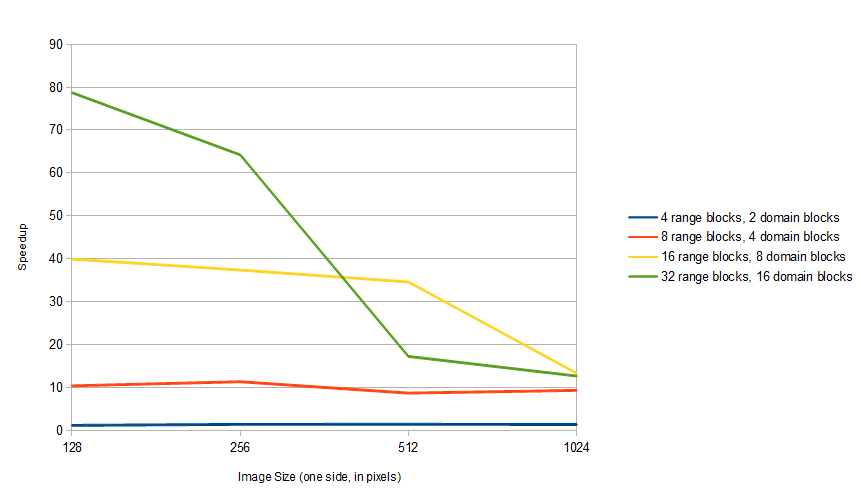This graph shows the constant speedup gained with different numbers of range/domain blocks as the image size changes. Our computation is dominated by the distance and matching kernels, and the parallelization these kernels achieve is only affected by the number of range/domain blocks, rather than the size of the blocks themselves. We saw some extreme speedups with smaller images, but we believe these are the effects of good cache fitting, which is why we see them go away as the input image size grows.
We believe that a CUDA, GPU based solution was the right choice to use for this problem. The crux of our speedup is gained in the distance and matching kernels. Without a GPU-based approach, we would never be able to get the 100x+ speedup we are seeing in some cases.
References
- Iterated Function Systems
- Barnsley M., Fractals Everywhere. Academic Press. San Diego, 1989.
- The Collage Theorem
- Microsoft’s Encarta Encyclopedia
- Monkey picture source
The Challenge
While most of the base algorithm described has clear parallelism, there are still several unanswered questions. For instance, when computing the codebook, there are several way we could attack the problem. One way is to only parallelize across domain blocks, having a single CUDA thread compute all 8 transformations for the block. Another way is to use a CUDA thread for each block-transformation pair. While this is more parallelized, it also requires half of the transformation threads to redundantly compute the mirror of the block. A final approach could be to still parallelize across blocks and transformations but use shared memory to reduce the redundant calculations.
Other challenges include determining how to parallelize the determination of the best codebook element for each range block. Again, there are multiple possible dimensions to parallelize across, each with their own tradeoffs.
Resources
For our project, we plan to start both the sequential and the CUDA implementations from scratch, though we both have some experience with the algorithm from a math class. Additionally, there are several papers about fractal image compression available on the internet.
We plan to use either the GTX 780 GPUs in the GHC clusters, or one of the more powerful GPUs in the latedays cluster for our project.
Goals and Deliverables
Goals:
- Sequential fractal image compression for greyscale images
- Sequential fractal image decompression for greyscale images
- CUDA fractal image compression for greyscale images
Stretch Goals:
- Sequential/CUDA fractal image compression for color images
- Codebook pruning (see background section)
For our demo we plan to show analysis of our CUDA implementation versus the sequential version. This would include speedups for different image, range block, and domain block sizes. Additionally, if the implementation is fast enough, we could compress images taken at the demo, and show the decompression iterations (similar to the monkeys above).
Platform Choice
We believe GPUs are the correct platform for our project because many steps of our problem can be broken down into a very large number of independent pieces, which suits GPU architectures well.
Schedule
equal work was performed by both project members.
Week of April 4th:
- Define our compressed file format DONE! (link)
- Decide on input/output file format (pre/post compression/decompression). We chose PPM. DONE! (link)
- Setup git repo DONE! (link)
- Setup environment/build system DONE! (link)
- Setup benchmarking and testing harness modelled off of Assignment 2 structure DONE! (link)
Week of April 11th:
- PPM Image reader DONE! (link)
- Fix PPM Image writer from Assignment 2 DONE! (link)
- Sequential resize of image DONE! (link)
- Sequential codebook generation DONE! (link)
Week of April 18th:
- Sequential transformation choosing (Clayton)
- Sequential decompression (Nora)
- CUDA resize of image (Clayton)
- CUDA codebook generation (Nora)
Week of April 25th:
- CUDA transformation choosing (Nora)
- Begin analysis (Clayton)
Week of May 2nd:
- Finish analysis (Clayton)
- Padding/Stretch goals (Both)
Checkpoint
Defining a Compressed File Format
It took us quite a bit of time to think about, formalize, and document the compressed file format that we plan on using for this assignment. Our full specification and some of our thoughts on it can be found in our docs.
Structuring our Project and Setting up our Environment
So far, we have spent a lot of time structuring our project and generally setting up our development environment. The structure of our project mimmics Assignment 2's structure, but most of the Assignment 2 code had to be scrapped. The structure is basically the only thing that makes our project similar to Assignment 2, the actual implementation that we are creating is quite different. The benchmarking process was something that we really wanted for this assignment since we will be comparing a sequential implementation to many paralled implementations. We were able to successfully build and run the project.
Defining Classes and APIs
In order to start implementation, we had to define a set of classes and APIs that we would be working with. We defined APIs for our Compressor and Decompressor.
Redesigning the Image Representation
Additionally, we have redesigned the Image representation from Assignment 2 and have begun to develop our own compressed image representation (or at least the data needed to write this). We created a fractal.h file where we hope to store the fractal image data structures that can be shared across our sequential and parallel implementations. We plan on having our representations of Domain/Range Blocks be wrappers of the existing Image class so that transformations can be defined and applied at the Image level. We have already created a resize function, and the eight affine transfomations to help us create our codebook elements, and plan to create more.
Schedule
We updated our schedule to reflect the work we have done so far and the work we plan on doing in the future. We are mostly pair programming this project because it is how we have successfully worked on the previous assignments for this class. For this reason, we are a bit hesitant to name owners of various tasks, but we know it's what you guys want to see so we have put them down. New tasks have been added to our schedule to reflect some of the unexpected work we accomplished and also the new work we realized we will need to do in the future. We hope to be finished with a sequential implementation and on to a paralled implementation soon.